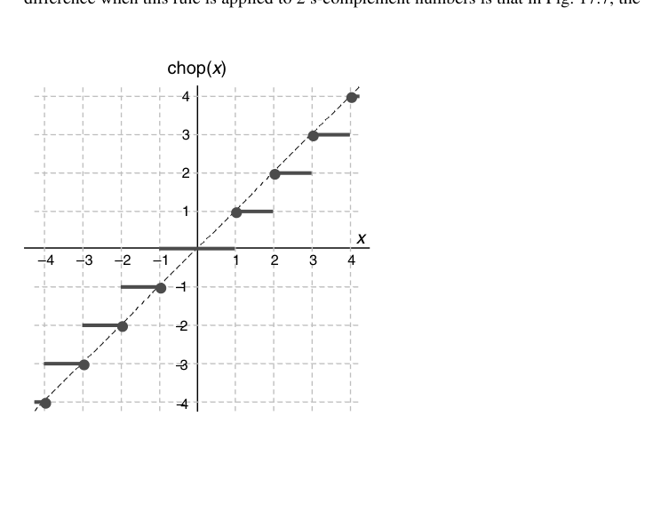
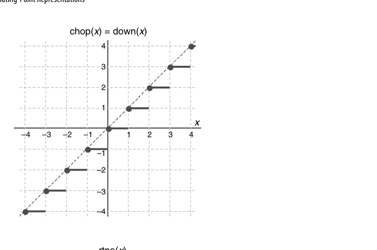
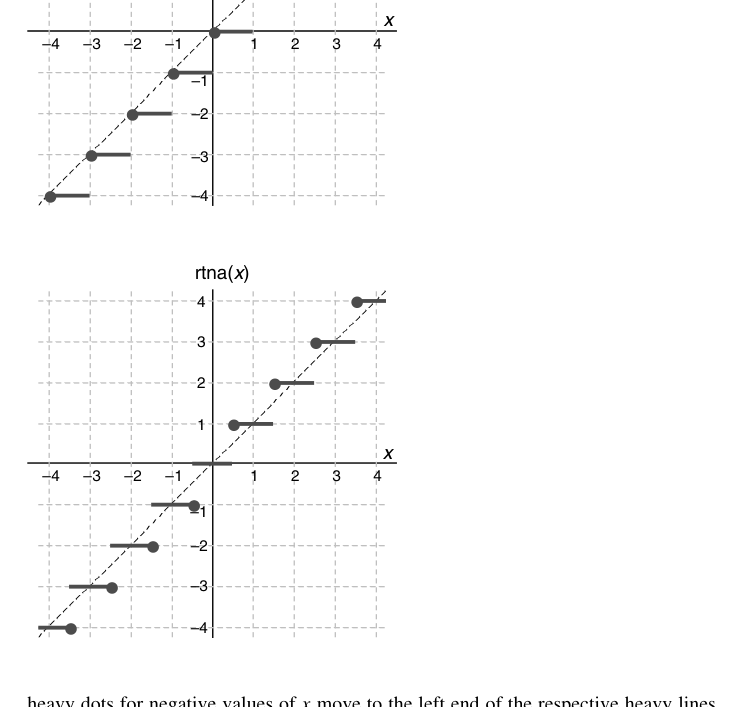
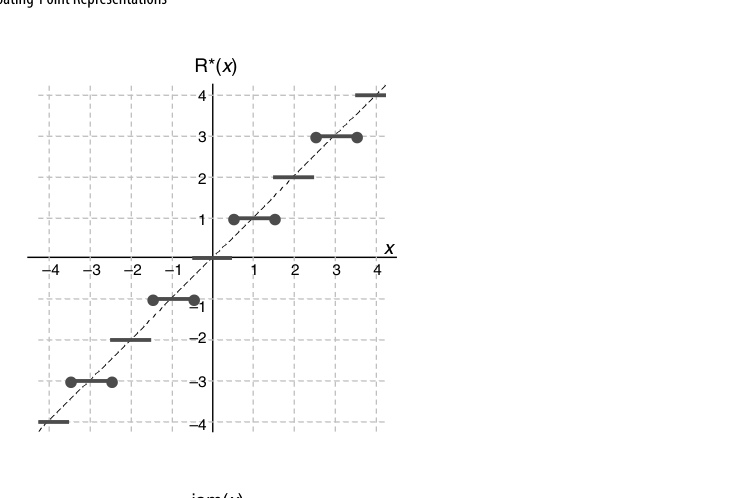
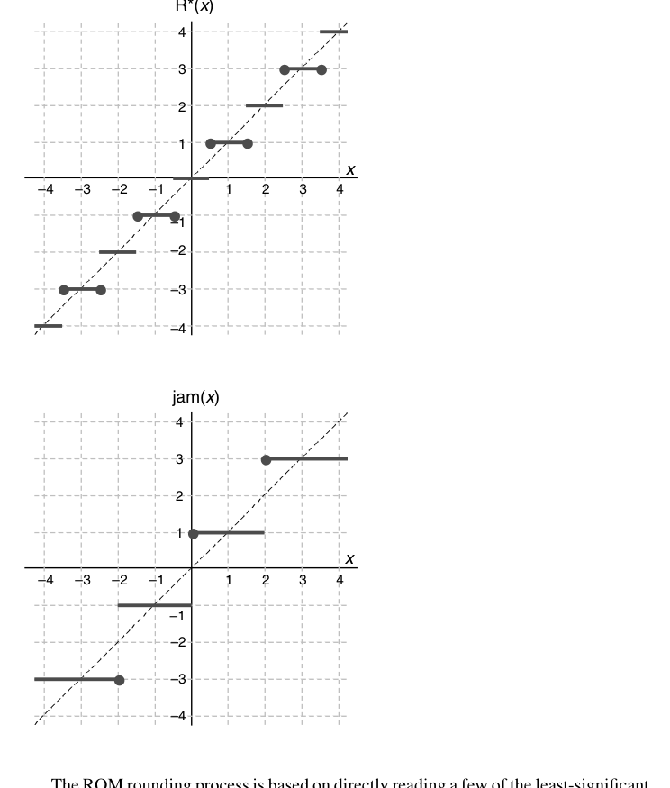
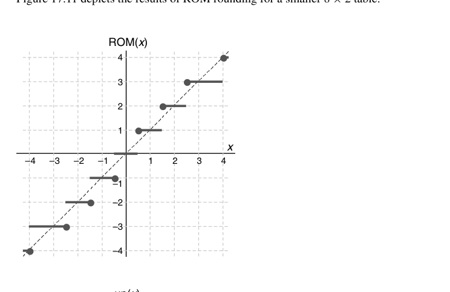
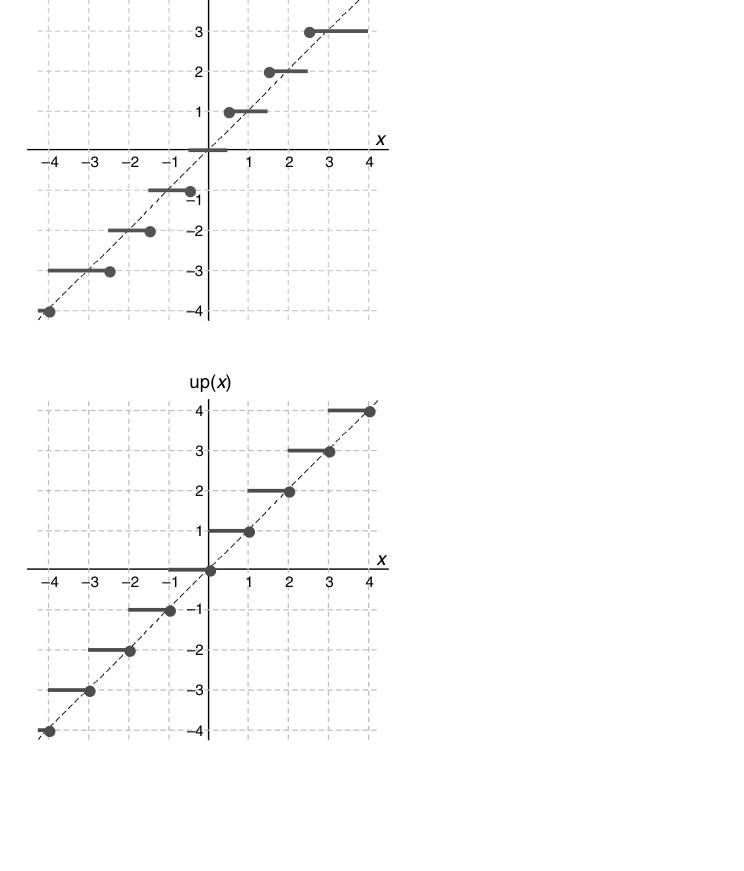
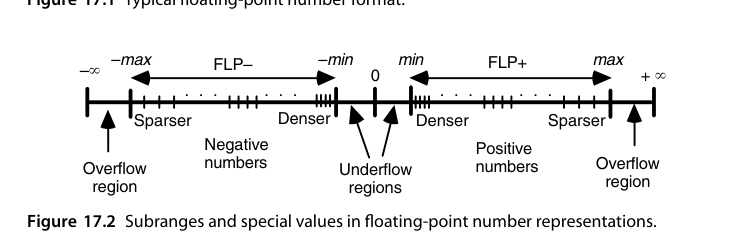
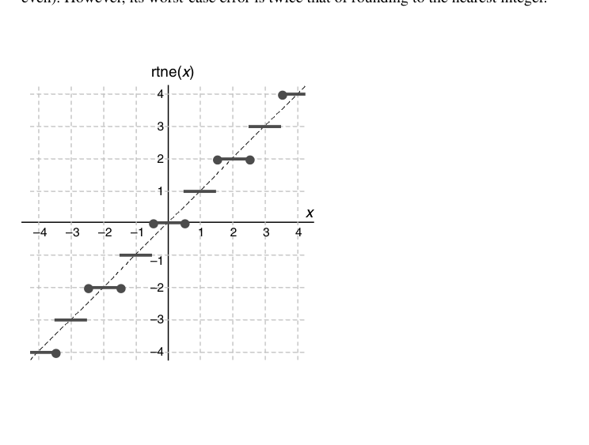

第17章 浮点数表示（Floating-Point Representations）
本章导读
定点数的表示范围与精度此消彼长，浮点数用”科学计数法”破局：符号 + 阶码 + 尾数，让表示范围与相对精度解耦。本章讲浮点表示的基本权衡、IEEE 754 标准的设计决策，以及舍入方案——这些是第 18 章浮点运算与第 19 章误差分析的地基。
抓住一条主线就能串起全章：浮点数的每个字段都在为”相对精度大致恒定”服务——尾数决定相对精度，阶码决定这份精度被搬到数轴的哪一段。
17.1 浮点数（Floating-Point Numbers)
浮点格式四要素：符号 \(s\)、基数 \(r\)、阶码 \(e\)、有效数/尾数（significand）\(m\)：
\[ x = (-1)^s \times m \times r^{e} \]
先看它解决了什么。定点格式把可表示值等距排在数轴上，绝对误差处处相同，相对误差却对小数量极其不利：
\[ x = (0000\,0000.\,0000\,1001)_{\text{two}}, \qquad y = (1001\,0000.\,0000\,0000)_{\text{two}} \]
同样位宽下 \(x\) 只有 4 位有效数字而 \(y\) 有 8 位，且 \(x^2\) 下溢、\(y^2\) 上溢。改成浮点后 \(x = (1.001)_{\text{two}}\times2^{-5}\)、\(y = (1.001)_{\text{two}}\times2^{+7}\)，两者的相对表示误差完全一致。可表示点在小数量处密集、大数量处稀疏，正好对齐”相对精度”的度量方式。
核心权衡（固定总位宽下）：
- 阶码位数多 → 范围大、精度粗；
- 尾数位数多 → 精度细、范围小。
浮点数有两个”符号”值得留意：数的符号用单独一位按原码表示；阶码的符号不单独编码，而是嵌在偏置码里（2.2 节），偏置取 2 的幂时阶码符号就是最高位的反。偏置码的附带好处是全 0 字自然表示 0，且规格化正浮点数可当整数直接比大小。
基数 \(b\) 的取舍：\(b\) 越大，同样阶码位数覆盖的范围越大、指数运算越省事（IBM S/360 用 \(b=16\)）。代价是精度抖动（wobbling precision）：\(b=16\) 时规格化尾数前导 0 可能多达 3 位，实际有效位数在标称值上下浮动 0-3 位。现代一律取 \(b=2\)。
规格化（normalization）：规定尾数最高位非零（二进制下首位恒为 1），消除”同一个数多种表示”的歧义，同时白捡 1 位精度（隐藏位 hidden bit）。小数点左边的整数位数 \(k\) 也有讲究：\(k=0\) 得 \([0,1)\) 的纯小数尾数（传统称 mantissa）；\(k=m\) 得整数尾数；IEEE 取 \(k=1\)，尾数落在 \([1,2)\)，整数位恒 1 可隐藏。
17.2 IEEE 浮点标准（The IEEE Floating-Point Standard)
IEEE 754 (IEEE 2019年) 的设计决策，每一条都有硬件含义：
| 特性 | 单精度 | 双精度 | 设计意图 |
|---|---|---|---|
| 总位宽 | 32 | 64 | |
| 符号 | 1 | 1 | 原码表示（2.1 节） |
| 阶码（偏置） | 8 位，bias 127 | 11 位，bias 1023 | 偏置码→无符号比较（2.2 节） |
| 尾数 | 23+1 隐藏位 | 52+1 隐藏位 | 规格化白捡 1 位 |
IEEE 754-2008 定义了四种二进制格式：半精度（16 位，5 位阶码 bias 15、10+1 尾数）、单精度、双精度、四精度（128 位，15 位阶码 bias 16383、112+1 尾数）。半精度面向游戏、嵌入式与 AI 推理等能耗敏感场景；四精度服务少数科学计算，并为”中间结果用扩展精度”提供标准归宿。另有 32/64/128 位十进制格式，把三个十进制数字（000-999）压进 10 位而非 BCD 的 12 位。
特殊编码（阶码全 0 / 全 1 的保留用法）：
- 非规格化数（subnormal/denormal）：阶码全 0，隐藏位变 0——让最小规格数到 0 之间”渐进下溢（gradual underflow）“，避免精度悬崖；
- Inf：阶码全 1、尾数 0——溢出的明确表示；
- NaN：阶码全 1、尾数非 0——\(0/0\)、\(\infty - \infty\) 等无效运算的结果，且 NaN 参与任何运算仍得 NaN（错误传播不中断）。
① \(12.375 = (1100.011)_{\text{two}}\)；② 规格化得 \((1.100011)_{\text{two}}\times2^{3}\)，故 \(e=3\)；③ 符号位 \(=1\)；④ 阶码字段 \(= e+127 = 130 = (1000\,0010)_{\text{two}}\)；⑤ 尾数字段为去掉隐藏 1 后的 100011 右补 0 至 23 位。拼接得
1 10000010 10001100000000000000000 = 0xC1460000
反验一个：0x3F800000 → 符号 0、阶码 01111111\(=127\) → \(e=0\)、尾数全 0 → \(1.0\)。
几个常数值得记住：单精度最小规格数 \(2^{-126}\approx1.18\times10^{-38}\)、最大数 \(\approx3.40\times10^{38}\)、最小非规格数 \(2^{-149}\approx1.4\times10^{-45}\)。对 \(x\in[1,2)\)，\(\mathrm{ulp}=2^{-23}\approx1.19\times10^{-7}\)，就近舍入的相对误差界为 \(2^{-24}\approx5.96\times10^{-8}\)——这就是”单精度约 7 位十进制有效数字”的来源。
标准还定义了扩展格式（single-extended：阶码 ≥11 位、尾数 ≥32 位；double-extended：阶码 ≥15 位、尾数 ≥64 位）。扩展格式不保证运算达标，价值在于控制误差传播：长串求和时把正负项分别累加更准，但小计可能溢出，用扩展格式就能把溢出概率压下去（x86 的 80 位 long double 即其实例）。比较规则也进了标准：\(\pm0\) 视为同一个数；NaN 与一切（含自身）无序，故 NaN != NaN 为真；不同格式的两个数按其无限精确值比较。

它不仅统一了格式，更统一了语义：每个运算的结果必须是”无限精确结果按指定模式舍入后的值”（正确舍入）。这让同一程序在任何合规机器上逐比特一致——可移植性与可复现性的基石。非规格化数曾是最具争议的条款（硬件成本），但”渐进下溢”换来的数值稳定性被证明物有所值。
17.3 基本浮点算法（Basic Floating-Point Algorithms)
浮点运算的通用流程（第 18 章细化）：
- 拆解：分离符号、阶码、尾数，还原隐藏位；
- 对齐/运算：加减法先对阶（小阶向大阶对齐，尾数右移），乘除法阶码相加减、尾数相乘除；
- 规格化：结果左移/右移恢复”1.xxx”形态，阶码相应调整；
- 舍入：按目标格式截断尾数；
- 异常处理：溢出→Inf 或最大数，下溢→非规格化或 0，无效→NaN。
每一步都对应真实的硬件模块——第 18 章的浮点加法器/乘法器就是这条流水线的具体化。
加减法的对阶公式（设 \(e_1 \ge e_2\)）：
\[ \pm s_1 b^{e_1} \pm s_2 b^{e_2} = \left(\pm s_1 \pm \frac{s_2}{b^{\,e_1-e_2}}\right) b^{e_1} \]
例 1（异阶相加）：\(x = (1.0100)_{\text{two}}\times2^{5}\)，\(y = (1.1011)_{\text{two}}\times2^{2}\)。指数差 \(\Delta e = 3\)，把 \(y\) 的尾数右移 3 位得 \((0.0011011)_{\text{two}}\times2^{5}\)；相加得 \((1.0111011)_{\text{two}}\times2^{5}\)，已在 \([1,2)\) 无需规格化。同号相加的结果落在 \([1,4)\)，至多右移 1 位。
例 2（有效减法）：\(x = (1.1000)_{\text{two}}\times2^{4} = 24\)，\(y = (1.0111)_{\text{two}}\times2^{4} = 23\)。阶码相同无需对阶，相减得 \((0.0001)_{\text{two}}\times2^{4}\)，需左移 4 位并阶码 \(-4\)，结果为 \((1.000)_{\text{two}}\times2^{0}\)。
例 2 揭示了浮点加法的难点：有效减法产生的前导 0 长度不可预知，且被移出的低位一旦丢弃，相对误差可任意大（第 19 章的灾难性抵消）——这正是保护位存在的理由。
乘法：尾数相乘、阶码相加；两个 \([1,2)\) 尾数之积落在 \([1,4)\)，至多右移 1 位。阶码用偏置码时要”加完再减一个 bias”，单精度下实现技巧是令进位输入为 1（等价于减 128）再把结果 MSB 取反。除法：尾数相除、阶码相减，商落在 \((1/2,2)\) 至多左移 1 位。开方：先把阶码调成偶数（奇数时尾数乘 2、阶码减 1），再用 \(\sqrt{s\times b^e} = \sqrt{s}\times b^{e/2}\)，且永不上溢或下溢。
一个易被忽略的细节：舍入本身也可能引发再规格化与溢出——尾数 \((1.111\cdots1)_{\text{two}}\) 进位后变成 \((10.0)_{\text{two}}\)，需再右移 1 位并调阶码。概率极低但设计必须覆盖。
17.4 转换与异常（Conversions and Exceptions)
- 整数↔︎浮点：注意双向精度损失（32 位 int 转单精度可能丢低位；大浮点转 int 可能溢出）；
- 单精度↔︎双精度：扩精度无损，缩精度需舍入；
- 十进制↔︎二进制：输入输出转换的正确舍入曾长期是标准库的 bug 温床（1.5 节的进制转换问题在此重演）。
任何高精度→低精度的转换都必须按当前舍入模式舍入。IEEE 754-2008 规定五种舍入模式：就近取偶（rtne，默认）、就近远离零（rtna）、向零（inward）、向 \(+\infty\)（upward）、向 \(-\infty\)（downward）。后两种定向舍入是区间算术（20.5 节）的硬件钩子：下界向下舍、上界向上舍，才能保证区间真的包住真值。
异常五类：无效操作、除零、溢出、下溢、不精确（inexact）。IEEE 754 默认”置标志 + 给默认值”而非陷入——保证数值程序批量运行不中断。
| 异常 | 典型触发 |
|---|---|
| 无效操作 | \((+\infty)+(-\infty)\)、\(0\times\infty\)、\(0/0\)、\(\sqrt{x}\) 且 \(x<0\)、无序比较 |
| 除零 | 非零有限数 ÷ 0 |
| 溢出 | 舍入后阶码超出上界 |
| 下溢 | 幅值小于最小规格数（含渐进下溢） |
| 不精确 | 舍入结果与无限精确结果不等 |
特殊值的传播规则也是定死的：普通数 \(\div(+\infty) = \pm0\)、\((+\infty)\times\)普通数 \(=\pm\infty\)、NaN \(+\) 普通数 \(=\) NaN。这样异常就能顺着数据流传到计算末尾，而不是中途炸掉。
17.5 舍入方案（Rounding Schemes)
IEEE 754 的四种舍入模式：
- 就近舍入（round-to-nearest-even，默认）：最近的可表示值；平局时取末位为偶者——统计上无偏，长期累加误差最小；
- 向零（截断）：硬件最简，但有偏（系统性偏小）；
- 向 \(+\infty\) / 向 \(-\infty\)：区间算术（20.5 节）的左右护法，用于严格的误差界限。
硬件实现的关键三比特：保护位（guard）、舍入位（round）、粘位（sticky）——sticky 是”被移出的所有位的 OR”，有了它才能区分”恰好一半”与”略多于一半”，从而正确执行就近偶舍入。第 18.3 节会看到这哥仨如何驱动舍入逻辑。
舍入要解决的问题很朴素：把 \(x_{k-1}\cdots x_0.x_{-1}\cdots x_{-l}\) 变成整数（保留 \(l'\) 位小数只是把小数点左右同移 \(l'\) 位）。逐个方案看它们的硬件代价与统计偏差。
截断（chopping）：它的效果取决于编码——这是最易被忽略的一点。对原码数，截断使幅值变小，即向零舍入（图 17.5）；对 2 的补码数，截断使数值变小，即向 \(-\infty\) 舍入。

就近舍入、平局远离零（rtna）：小数部分 \(<1/2\) 舍去，\(\ge1/2\) 进位。

rtna 看似公平，其实有系统性上偏。保留 2 位小数时四种末位组合的误差为 \(00\to0\)、\(01\to-0.25\)、\(10\to+0.5\)、\(11\to+0.25\)，等概率下平均 \(+0.125\)——不是零。更麻烦的是实际计算中出现”恰好一半”的概率远高于随机的 \(2^{-l}\)，偏差会被放大，长链累加时形成可观的漂移（drift）。
就近取偶（rtne）把平局按末位奇偶一分为二，于是统计无偏；附带好处是结果”更圆”（末位为 0），后续再遇平局的概率下降。它是 IEEE 754-2008 的默认模式。
\(\mathrm{R}^*\) 舍入：平局时截断并把结果最低位强制为 1，等价于”就近取奇”。同样无偏，但结果末位恒为 1、“更不圆”，未被标准采纳。

上述方案最坏都要对 \(k\) 个整数位做完整进位传播，而舍入总在关键路径末端，开销令人不快。历史上两种”消灭进位传播”的方案都因别的问题没进实践：
- Jamming（von Neumann 舍入）：截断后把最低位强制为 1，兼具截断的简洁与舍入的对称性（误差有正有负），但最坏误差是就近舍入的两倍（1 ulp 而非 ulp/2）。

- ROM 舍入：以”受影响的低位 + 被丢弃部分的最高位”为地址，直接读出舍入后的低位。4 位结果可用 \(32\times4\) 的 ROM（地址 \(x_3x_2x_1x_0x_{-1}\)）：\(x_{-1}=0\) 或低位全 1 时输出原值，否则输出原值 \(+1\)。16 种情形中 15 种与就近舍入一致，仅低位全 1 时误差偏大；完全避开进位传播，代价是额外的表与残余向下偏差。

定向舍入：有时需要强制误差朝某个方向走——计算上界时偏大无害、偏小则可能使结论失效。为此定义向上与向下两种定向舍入，它们（连同向零）是 IEEE 754-2008 的必备特性。

17.6 对数数系（Logarithmic Number Systems, LNS)
另类实数表示：存 \(\log_b |x|\) + 符号。乘法/除法/开方变成定点加减/移位（极快），但加法/减法需要查表计算 \(\log(1 \pm b^{v-u})\)——难运算与易运算完全对调。
形式上，对数数（sign-and-logarithm）就是尾数字段被删掉、只剩隐藏 1 的浮点数的极限情形：数由符号 \(S_x\) 与定点对数域 \(L_x = \log_2|x|\) 组成，对数域必须带小数位，否则只能表示 2 的幂。因 \((0,1)\) 内数的对数为负，对数域要么按 2 的补码解释，要么整体加偏置（等价于把所有数乘一个比例因子）。
LNS 最吸引人的性质是相对表示误差处处恒定。设对数域有 \(l\) 位小数，就近舍入下 \(|\Delta e| \le 2^{-(l+1)}\)，而 \(x = 2^e\)，故
\[ \frac{|x_{\text{fp}} - x|}{x} = 2^{|\Delta e|} - 1 \approx (\ln 2)|\Delta e| \le 0.693 \times 2^{-(l+1)} \]
这个界与 \(x\) 的大小完全无关。对比浮点：相对误差在 \(2^{-p}\) 与 \(2^{-p+1}\) 之间抖动（\(r=16\) 时差 16 倍）。LNS 用一条平坦的精度曲线换取了加法的困难。
取基 2、对数域 5 位整数 + 6 位小数（2 的补码），指数范围 \([-16, 16-2^{-6}]\)，可表示数范围约 \([-2^{16}, 2^{16}]\)。位模式 1 | 10110.001011：符号位 1 表示负数，对数域 MSB 为 1，取补得 \(-(01001.110101)_{\text{two}} = -9.828125\)，故该模式表示 \(-2^{-9.828125} \approx -0.0011\)。
乘除极简（符号 XOR、对数相加减）；加减要用 \(\log(x\pm y) = \log x + \log(1\pm y/x)\)，其中 \(\log(1\pm y/x)\) 只能查表——直接查 \(\log\) 与 \(\log^{-1}\) 需 \(2^{2k}\times k\) 的表，\(k\) 超 12 位就不现实（18.6 节的 \(\varphi^{\pm}\) 单操作数方案是实用化解法）。
LNS 在特定 DSP 负载（乘法密集、加法少）曾有一波研究热潮；通用计算未能撼动 IEEE 754。它的思想遗产活在 AI 量化里——log 域量化（幂次量化）本质上就是一种粗精度 LNS。介于两者之间的还有半对数数系：阶码是带 \(h\) 位小数的定点数、尾数落在 \([1,1+2^{-h})\)，\(h=0\) 退化为浮点、\(h=k\) 退化为 LNS，构成一条连续光谱。
本章小结
- 浮点 = 范围与精度解耦；规格化 + 隐藏位是免费精度。
- IEEE 754 的伟大在于语义统一：正确舍入 + 明确的特殊值与异常。
- 非规格化数实现渐进下溢；NaN 让错误不中断传播。
- 就近偶舍入无偏；guard/round/sticky 三比特是舍入硬件的核心。
原书插图

